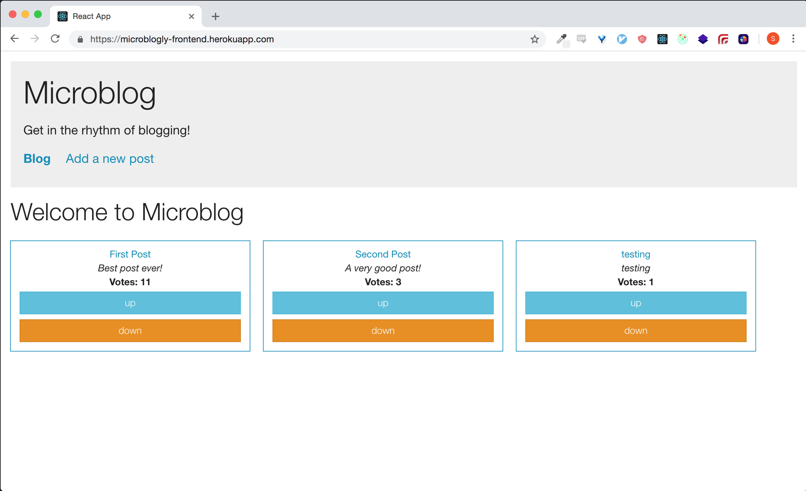
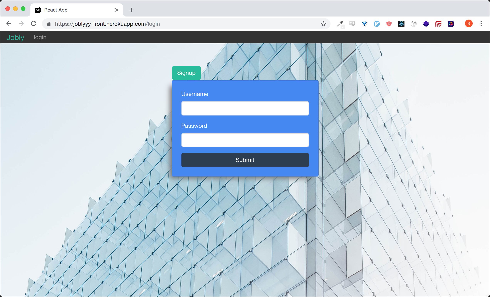
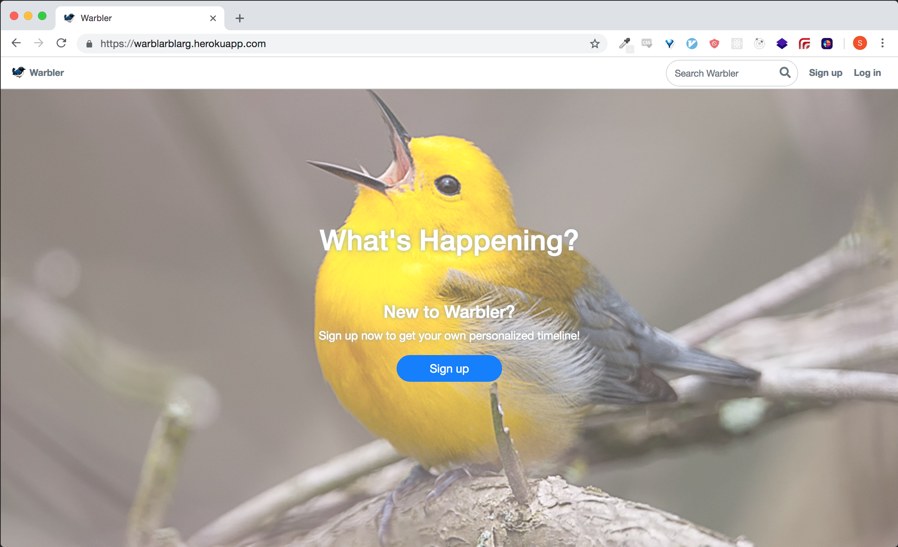

About Me
I grew up in the Bay Area, went to school in Vermont, and worked at
a marketing agency in Boston for two years before returning home to
attend code school in San Francisco. I am primarily a fullstack JS
developer, but I have experience working on Flask and Rails as well
as mobile with React Native. The language I'm most excited to learn
is Rust because of WASM.
include contact information here
Course Report
Mobile Application and Proxy Server
As part of my internship at Course Report I helped build an MVP
mobile app that allows users to read blog articles and view/contact
schools. The project leveraged an Express proxy server to
periodically retrieve school and blog data from the core rails
server, store it in a redis cache, and serve it to the mobile app
using RESTful standards. The app features auto-pagination while
scrolling, fuzzy search, and sort by location functionality.
Blog Application Frontend
I built the frontend using Redux, React, and Bootstrap. Users can
write, edit, comment, and vote. Posts are ranked on the frontpage of
the site. The primary focus of this project was to design a
heirarchy that connects components to Redux in a strategic and
thoughtful manner. An interesting part of this project was using the
combineReducers Redux feature to separate reducers for different
objects in the store.

Job Search App
The site features authentication and search functionality so that
users can login and easily find jobs that they're interested in.
When users apply for jobs the status of their application is
remembered upon logout. I built the backend using Express and the
frontend using React.

Classic Snake Built in React
I exercised my knowledge of the React lifecycle to build my take on
the classic arcade game. The snake gets faster as it grows!
While making the game I ran into a number of React specific problems
that I had to overcome. For example, elements with duplicate keys
dropping from the virtual DOM.
Twitter Clone

I Built server-side rendered Twitter clone in Flask. This project
taught me how to build a site with no frontend, relying on
server-side templating and HTML responses. Working with Flask, I
learned about auth patterns, the concept of a global user, and
sessions.